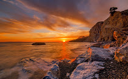
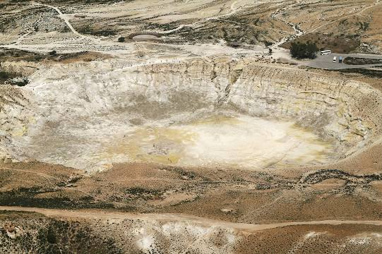
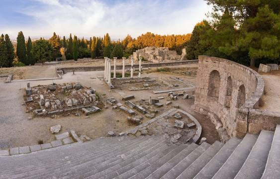
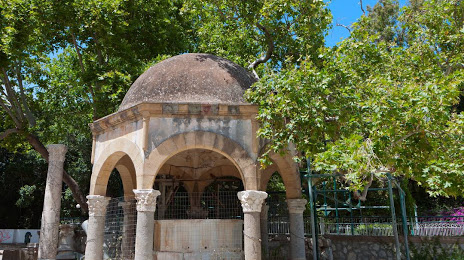
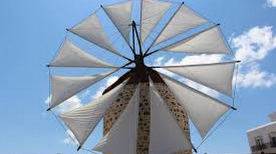

Die Top 5 Aktivitäten und Sehenswürdigkeiten auf Kos
1.Embros Therme
 Die Empros Therme liegt ca. 9 Km von Kos Stadt entfernt in Richtung Agios Fokas. Von Kos Stadt geht auch eine ständige Busverbindung dorthin die Fahrzeit beträgt hier ca. 15 - 20 Minuten. Oberhalb der Therme gibt es Parkmöglichkeiten, weiter unterhalb sind die wenigen Parkplätze ab ca. 11:00 Uhr belegt um diese Uhrzeit wird die Therme auch von den Rundreisebussen angefahren.
Die Therme besteht aus einer 80 Grad heißen Quelle vulkanischen Ursprungs und ist sehr schwefelhaltig, die Quelle strömt aus dem Berg und fließt in einen ca. 10Meter x 10Meter großes mit Natursteinen abgegrenztes Meerwasserbecken. In der Mitte der Therme hat das Wasser noch eine Themperatur von ca. 35-40 Grad und ist gerade für den Kreislauf eine echte Herausforderung. Der Zutritt zur Therme ist kostenlos, Öffnungszeit gibt es nicht. Wer die Therme allerdings Abends besucht, sollte seine Taschenlampe nicht vergessen, da der Weg zur Therme nicht befestigt und recht steil ist.
2. Besucht die Vulkaninsel Nisyros
Gesäumt von Oliven bewachsenen Hängen, präsentiert sich die Caldera, der Vulkankrater der Insel Nisyros, die innerhalb weniger Stunden von Kos aus erreichbar ist. Der Boden dieser unwirklichen anmutenden Landschaft erreicht dank des immer noch aktiven Lavaflusses an einigen Stellen bis zu 70 Grad Celsius und schimmert gelb vom Schwefelstaub, der sich hier über die Jahre hinweg abgesetzt hat. Neben der eigentlich Caldera gibt es auf Nisyros auch eine kleine Ortschaft, die vor allem dank des Altersdurchschnitts ihrer Bewohner beeindruckt: Dieser liegt nämlich weit über den 60 Jahren, da die meisten jüngeren Bewohner recht bald in andere Gebiete umziehen.
3. Taucht im Asklepieion in die Welt der antiken Heilkunst
Griechenland ist ja bekanntlich einer der Vorreiter der modernen Heilkunst, mit weltberühmten Gelehrten wie Hippokrates, die genau hier, im Asklepieion, unterrichtet worden sein sollen. Ob die Legenden nun stimmen mögen oder nicht, die Atmosphäre, die dieses ehemalige Krankenhaus mit integrierter Heilschule zu bieten hat, sowie der wundervolle Ausblick über Kos und die nahen Inseln sind es allemal wert, der antiken Anlage einen Besuch abzustatten. Vorsicht bei der Planung: Das Asklepion ist nur vormittags geöffnet, also morgens rechtzeitig losfahren!
4. Taucht im Asklepieion in die Welt der antiken Heilkunst
Einer der berühmtesten Orte auf Kos ist wohl die Platane des Hippokrates. Der angeblich mehr als 2400 Jahre alte Baum steht im Zentrum der Stadt Kos und wurde laut Legende vom Heiler Hippokrates selbst dort gepflanzt; später soll er unter eben jenem Baum seine Schüler unterrichtet haben. Weitere Legenden berichten davon, dass einige Jahrhunderte später auch der Apostel Paulus unter der Platane gelehrt haben soll. Ob man den Erzählungen Glauben schenken mag oder nicht, unumstritten ist, dass das schattige Plätzchen unter dem mächtigen Baum einen wundervollen Ort zum kurzen Verweilen und Genießen bietet, also lasst euch einen Trip dorthin auf keinen Fall entgehen!
5. Taucht im Asklepieion in die Welt der antiken Heilkunst
Eines der Wahrzeichen Kos sind seine Windmühlen und besonders beeindruckend ist darunter die Antimachia Windmühle nahe des Flughafens der Insel. Die zum Museum umfunktionierte Mühle selbst kann im Rahmen einer Tour besichtigt werden, wobei man sich die Funktionsweise des Apparats näherbringen lässt, während man im angeschlossenen „traditionellen Haus“ etwas mehr über die Lebensweise der typischen traditionellen Müllersfamilie auf Kos erfährt.